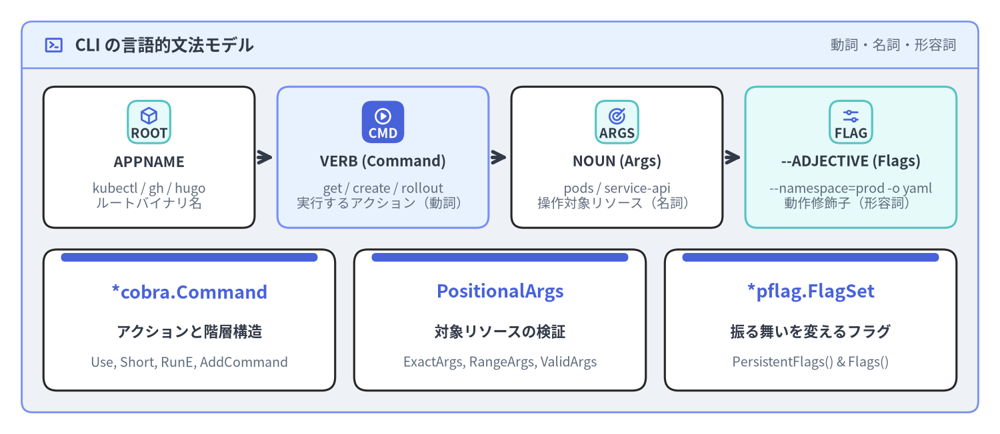
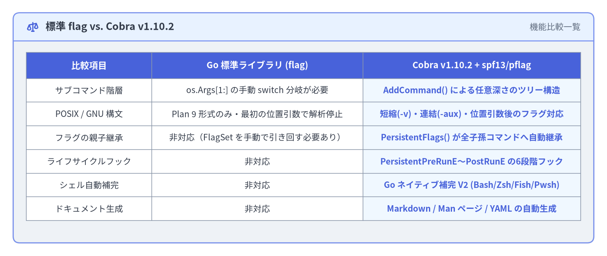

Cobra の設計思想と CLI 哲学
優れたコマンドラインツール（CLI）は、無秩序なフラグの羅列ではなく、自然な文章のように直感的に読み書きできる文法を備えています。Steve Francia（spf13）が Hugo のために開発し、現在では Kubernetes（kubectl）、GitHub CLI（gh）、Docker、Helm などのクラウドネイティブ基盤を支える Cobra（v1.10.2） は、階層型サブコマンドのコントローラと POSIX/GNU 準拠のフラグパーサ（spf13/pflag）を一体化したライブラリです。本ページでは、Cobra の根幹にある言語的文法モデル、Go 標準ライブラリの flag パッケージとの比較、そして Command・Args・Flags の3大プリミティブを解説します。

Source Code
from drawlib.canvas import save, setup
from drawlib.icons import phosphor
from drawlib.smartarts import CardList, KpiCards, Panel
from drawlib.styles import Styles
setup(width=184, height=80, dpi=150)
outer = Panel(
"CLI の言語的文法モデル",
"動詞・名詞・形容詞",
style=Styles.Neutral.patch(shape_r=2.0),
header_style=Styles.PrimaryNeutral.patch(shape_line_width=1.2),
text_style=Styles.DarkBold.patch(text_size=12.0),
description_style=Styles.Muted.patch(text_size=10.0),
icon=phosphor.terminal_window,
icon_style=Styles.PrimaryBold,
header_variant="filled",
header_height=8.5,
)
outer.draw((4.0, 4.0), width=176.0, height=72.0)
grammar = CardList(
style=Styles.White,
text_style=Styles.DarkBold.patch(text_size=10.5),
description_style=Styles.Muted.patch(text_size=9.5),
badge_shape="rounded_rect",
badge_style=Styles.SecondaryNeutral,
badge_text_style=Styles.DarkBold.patch(text_size=9.5),
icon_style=Styles.PrimaryBold,
direction="horizontal",
show_arrows=True,
arrow_style=Styles.DarkBold,
spacing=4.0,
)
grammar.add(
"APPNAME",
"kubectl / gh / hugo\nルートバイナリ名",
badge_text="ROOT",
icon=phosphor.cube,
)
grammar.add(
"VERB (Command)",
"get / create / rollout\n実行するアクション（動詞）",
badge_text="CMD",
icon=phosphor.play_circle,
style=Styles.PrimaryNeutral,
badge_style=Styles.PrimaryFlat,
badge_text_style=Styles.WhiteBold.patch(text_size=9.5),
icon_style=Styles.WhiteBold,
)
grammar.add(
"NOUN (Args)",
"pods / service-api\n操作対象リソース（名詞）",
badge_text="ARGS",
icon=phosphor.target,
)
grammar.add(
"--ADJECTIVE (Flags)",
"--namespace=prod -o yaml\n動作修飾子（形容詞）",
badge_text="FLAG",
icon=phosphor.sliders_horizontal,
style=Styles.SecondaryNeutral,
)
grammar.draw(xy=(8.0, 38.0), width=168.0, height=26.0)
primitives = KpiCards(
style=Styles.White,
metric_style=Styles.PrimaryBold.patch(text_size=13.0),
text_style=Styles.DarkBold.patch(text_size=10.5),
description_style=Styles.Muted.patch(text_size=9.5),
accent_style=Styles.PrimaryFlat,
accent_position="top_bar",
metric_layout="top_stack",
spacing=3.5,
)
primitives.add("*cobra.Command", "アクションと階層構造", "Use, Short, RunE, AddCommand")
primitives.add("PositionalArgs", "対象リソースの検証", "ExactArgs, RangeArgs, ValidArgs")
primitives.add("*pflag.FlagSet", "振る舞いを変えるフラグ", "PersistentFlags() & Flags()")
primitives.draw(xy=(8.0, 8.0), width=168.0, height=26.0, columns=3)
save()
1. APPNAME VERB NOUN --ADJECTIVE の文法哲学
直感的で学習コストの低い CLI ツールは、自然言語の命令文と同じ語順で設計されています。
APPNAME VERB NOUN --ADJECTIVE
kubectl get pods --namespace=prod --output=yaml
gh pr create --base=main --fill
hugo server --port=1313 --buildDrafts
docker container inspect web --format='{{.State.Status}}'
| 文法上の役割 | Cobra のプリミティブ | トークン例 | 役割と責務 |
|---|---|---|---|
APPNAME |
ルート *cobra.Command |
kubectl, cloudctl |
バイナリ全体のエントリポイント。全サブコマンド共通の永続フラグ（--config, --kubeconfig）や context.Context を保持します。 |
VERB（動詞） |
子 *cobra.Command |
get, apply, rollout restart |
実行すべき アクション（操作） を表します。parent.AddCommand(child) により任意の深さのサブコマンド階層を構成できます。 |
NOUN（名詞） |
args []string (Command.Args) |
pods, my-cluster |
動詞が作用する 対象オブジェクト（位置引数） です。実行前に PositionalArgs（ExactArgs(1) 等）で個数や形式を検証します。 |
--ADJECTIVE（形容詞） |
spf13/pflag (Flags() / PersistentFlags()) |
--namespace prod, -o json |
アクションの 振る舞いを修飾するフラグ です。短縮形（-n）、長形式（--namespace）、排他・共起グループ制約をサポートします。 |
設計の指針 — 位置引数（
Args）とフラグ（--flags）の使い分け: コマンドが作用する「主たる単一の対象」が自明な場合（例:cloudctl delete cluster-a）には 位置引数（NOUN） を使います。一方、オプション指定・フィルタ条件・出力フォーマット・複数パラメータの設定（--force,--timeout=30s,--region=ap-northeast-1）には必ず 名前付きフラグ（--ADJECTIVE） を使用してください。
2. Go 標準ライブラリ flag と spf13/cobra + spf13/pflag の比較
Go 標準の flag パッケージは最小限の設計であり、POSIX/GNU 標準ではなく Plan 9 形式のフラグ規約に基づいています。サブコマンドを持つ本格的な CLI を構築する場合、標準 flag と Cobra（v1.10.2）には以下の決定的な違いがあります。

Source Code
from drawlib.canvas import save, setup
from drawlib.icons import phosphor
from drawlib.preset_colors import CssColors
from drawlib.smartarts import Panel, Table
from drawlib.styles import Colors, Styles
setup(width=184, height=78, dpi=150)
outer = Panel(
"標準 flag vs. Cobra v1.10.2",
"機能比較一覧",
style=Styles.Neutral.patch(shape_r=2.0),
header_style=Styles.PrimaryNeutral.patch(shape_line_width=1.2),
text_style=Styles.DarkBold.patch(text_size=12.0),
description_style=Styles.Muted.patch(text_size=10.0),
icon=phosphor.scales,
icon_style=Styles.PrimaryBold,
header_variant="filled",
header_height=8.5,
)
outer.draw((4.0, 4.0), width=176.0, height=70.0)
tbl = Table(
cell_style=Styles.White,
text_style=Styles.Dark.patch(text_size=10.0),
header_cell_style=Styles.PrimaryFlat,
header_text_style=Styles.WhiteBold.patch(text_size=10.5),
border_style=Styles.MutedThin,
)
tbl.set_style_cell_evenodd(
even_color=Colors.Light,
even_text_style=Styles.Dark.patch(text_size=10.0),
odd_color=Colors.White,
odd_text_style=Styles.Dark.patch(text_size=10.0),
)
tbl.set_style_cell_header(
background_color=Styles.PrimaryFlat.shape_fill_color,
text_style=Styles.WhiteBold.patch(text_size=10.5),
)
tbl.set_style_cell(
background_color=CssColors.AliceBlue,
text_style=Styles.PrimaryBold.patch(text_size=10.0),
rows=[1, 2, 3, 4, 5, 6],
columns=[2],
)
rows = [
["比較項目", "Go 標準ライブラリ (flag)", "Cobra v1.10.2 + spf13/pflag"],
["サブコマンド階層", "os.Args[1:] の手動 switch 分岐が必要", "AddCommand() による任意深さのツリー構造"],
["POSIX / GNU 構文", "Plan 9 形式のみ・最初の位置引数で解析停止", "短縮(-v)・連結(-aux)・位置引数後のフラグ対応"],
["フラグの親子継承", "非対応（FlagSet を手動で引き回す必要あり）", "PersistentFlags() が全子孫コマンドへ自動継承"],
["ライフサイクルフック", "非対応", "PersistentPreRunE〜PostRunE の6段階フック"],
["シェル自動補完", "非対応", "Go ネイティブ補完 V2 (Bash/Zsh/Fish/Pwsh)"],
["ドキュメント生成", "非対応", "Markdown / Man ページ / YAML の自動生成"],
]
tbl.draw_flexible(
xy=(8.0, 62.0),
column_widths=[38.0, 64.0, 66.0],
row_heights=[8.0, 7.2, 7.2, 7.2, 7.2, 7.2, 7.2],
data=rows,
align="top_left",
)
save()
実運用で最も影響が大きい「位置引数後のフラグ解析」の違い
Go 標準の flag パッケージでは、最初の位置引数（非フラグ引数）が出現した時点でフラグ解析が打ち切られる という仕様があります。
# Go 標準の "flag" パッケージを使った場合:
$ mytool --verbose deploy-target
# -> "--verbose" は true として解析され、args = ["deploy-target"] になる
$ mytool deploy-target --verbose
# -> 要注意！ "--verbose" はフラグとして認識されず、args = ["deploy-target", "--verbose"] になってしまう！
Cobra は内部で spf13/pflag を採用しているため、ユーザーが位置引数の 前でも後ろでも 自由にフラグを指定できます（cloudctl deploy prod --timeout=30s と cloudctl --timeout=30s deploy prod の両方が同じ結果になります）。さらに 1 文字フラグの連結指定（-la）や、-- によるフラグ解析の明示的な終了も標準で動作します。
3. cobra.Command を構成する3大プリミティブの実装構造
Cobra では、ルートコマンドも中間グループコマンド（cloudctl cluster）も末端の実行コマンド（cloudctl cluster create）も、すべて同一の cobra.Command 構造体で表現します。
cmd := &cobra.Command{
// 1. コマンド定義と Usage 文法
Use: "create <cluster-name>",
Aliases: []string{"add", "provision"},
Short: "マネージド Kubernetes クラスタを新規作成",
Long: "ノードプール構成を指定してリージョンまたはゾーン Kubernetes クラスタを作成します。",
Example: " cloudctl cluster create prod-east --nodes 5 --region us-east-1",
// 2. 位置引数（NOUN）の検証ルールと補完候補
Args: cobra.ExactArgs(1),
ValidArgs: []cobra.Completion{"dev-cluster", "staging-cluster", "prod-cluster"},
// 3. アクション（VERB）の実行ハンドラ
RunE: func(cmd *cobra.Command, args []string) error {
clusterName := args[0]
cmd.Printf("クラスタ %q をプロビジョニング中...\n", clusterName)
return nil
},
}
実行時における3つのプリミティブの連携フロー
- コマンド探索（
Find/Traverse）:rootCmd.Execute()が呼ばれると、Cobra はos.Args[1:]からフラグを除いたトークン列を読み取り、Useの先頭単語（Command.Name()）またはAliasesに一致する子コマンドを再帰的に辿ります。 - フラグ統合とパース（
ParseFlags）: 実行対象の末端Commandが特定されると、親・祖先コマンドで定義されたPersistentFlags()と自身のローカルFlags()が統合（mergePersistentFlags()）され、pflagによってフラグ値がバインドされます。 - 位置引数とフラグ制約の検証（
ValidateArgs）: フラグを除いた残りの引数スライス（c.Flags().Args()）に対してCommand.Argsバリデータ（例:cobra.ExactArgs(1)）が実行され、続いて必須フラグ（ValidateRequiredFlags()）とフラググループ制約（ValidateFlagGroups()）が検査されます。 - ライフサイクルフックの実行（
execute）: すべての検証を通過した後にのみ、PersistentPreRunE→PreRunE→RunE→PostRunE→PersistentPostRunEが順番に呼び出されます。
4. クラウドネイティブ・エコシステムにおける採用事例
主要なオープンソースプロジェクトがどのように Cobra を活用しているかを知ることで、大規模 CLI の設計パターンが見えてきます。
| プロジェクト | CLI バイナリ | 注目すべき Cobra アーキテクチャパターン |
|---|---|---|
| Kubernetes | kubectl |
genericclioptions.IOStreams と Complete() -> Validate() -> Run() の *Options 構造体パターンを確立（第2章 で詳解）。 |
| GitHub CLI | gh |
cmdutil.Factory DI コンテナを全 NewCmd* コンストラクタへ注入し、動的な ValidArgsFunction 補完を全面採用。 |
| Helm | helm |
PersistentPreRunE による環境設定の初期化、AddGroup によるヘルプ画面のカテゴリ分類、動的プラグイン探索を統合。 |
| Hugo | hugo |
Cobra と Viper の発祥プロジェクト。設定ファイル（hugo.toml）・環境変数・pflag を階層的にバインド。 |
| Docker CLI | docker |
TraverseChildren: true と SetGlobalNormalizationFunc を活用し、ルートフラグとサブコマンド群を柔軟にルーティング。 |
次のステップ
続いて クイックスタートとサブコマンド構築 に進み、spf13/cobra@v1.10.2 を使った Go モジュールの初期化と、rootCmd・versionCmd・serveCmd から成る最初の CLI ツリーを実装しましょう。